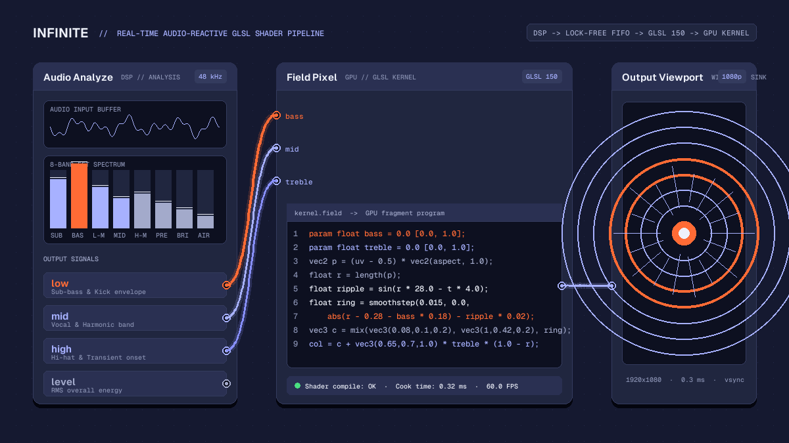

Creative
Audio-reactive GLSL shaders: writing real-time visuals in Infinite
Learn how to write real-time audio-reactive GLSL shaders in Infinite, map FFT frequency bands to shader uniforms, and generate responsive visuals on the GPU.

on this page

Writing audio-reactive GLSL shaders gives creative coders and visual artists the power to render responsive geometric worlds directly on the graphics processor. By connecting live sound analysis to GPU fragment programs, visual elements can pulse, distort, and morph in tight synchronisation with incoming music.
In Infinite, shaders and audio live on the same canvas. Rather than relying on separate applications communicating over Spout or NDI with variable latency, the audio engine and the GPU render pipeline share memory and clock timing. This article explains how to build custom audio-reactive GLSL shaders using the Field Pixel node, map fast Fourier transform frequency bands to shader uniforms, and maintain solid frame rates during live performance.
The architecture of audio-reactive shaders
A conventional graphics pipeline draws frames by calculating colour values for each pixel coordinate on the screen. In standard GLSL fragment shaders, coordinates arrive as normalized screen positions ranging from zero to one. To make these coordinates move with music, the shader requires numerical inputs that reflect acoustic energy across time.
In Infinite, this bridge is formed by two native nodes:
Audio Analyze: An audio-rate sink that continuously computes an 8-band FFT spectrum, root-mean-square amplitude, and transient onset energy from any incoming sound signal.Field Pixel: A GPU shader node that compiles high-level Field kernel code directly into GLSL 150 fragment programs, exposing declared parameters as modulatable pins.
Because the audio engine runs on dedicated real-time worker threads while the rendering engine operates on the main display loop, modulation values pass through lock-free ring buffers. This prevents audio dropouts or graphics stutter, ensuring that modulation data reaches shader uniforms at full monitor refresh rates.
Extracting frequency bands with Audio Analyze
Before writing shader logic, the patch needs an acoustic signal. You can route an audio file, a live microphone input, a synthesizer such as Analog, or a third-party VST3 instrument into an Audio Analyze node.
The Audio Analyze node inspects incoming 48 kHz audio buffers and separates the frequency spectrum into distinct musical bands:
low: Energy below 250 Hz, capturing kick drums and sub-bass weight.mid: Energy between 250 Hz and 4 kHz, covering vocals, synth leads, and snare bodies.high: Energy above 4 kHz, capturing hi-hats, cymbals, and transient attacks.level: The overall instantaneous RMS volume of the combined signal.
Each of these four measurements appears as an output pin on the node. When a cable is drawn from one of these pins to a shader parameter, Infinite updates the corresponding uniform before each frame render.
Writing GPU shaders in the Field Pixel node
The Field Pixel node allows you to author shader kernels directly in the node inspector. The Field compiler translates bare mathematical expressions into vectorised GLSL instructions.
Every pixel kernel in Infinite provides built-in coordinates:
uv: Normalized coordinates across the canvas from(0, 0)at bottom-left to(1, 1)at top-right.aspect: The ratio of canvas width to height (res.x / res.y), essential for preventing circular shapes from stretching into ovals.t: Elapsed time in seconds.col: The final output RGB vector assigned at the end of the kernel.
To accept modulation values from outside the node, declare parameters using the param keyword. For example:
param float bass = 0.0 [0.0, 1.0];
param float treble = 0.0 [0.0, 1.0];
param float speed = 1.0 [0.1, 5.0];Each declared param line automatically creates an input pin on the Field Pixel node. When you connect the low pin of Audio Analyze to bass, the value updates continuously as the bassline plays.
Constructing an audio-reactive radial pulse
To demonstrate how frequency data reshapes pixel geometry, consider a concentric wave pattern centered on the screen:
param float bass = 0.0 [0.0, 1.0];
param float treble = 0.0 [0.0, 1.0];
# Centre coordinates and correct aspect ratio
vec2 p = (uv - 0.5) * vec2(aspect, 1.0);
float r = length(p);
# Calculate dynamic rings influenced by time and bass
float rings = sin(r * 32.0 - t * 4.0);
float core = smoothstep(0.02, 0.0, abs(r - 0.25 - bass * 0.2) - rings * 0.015);
# Palette tinting with British colour notation
vec3 bg = vec3(0.05, 0.06, 0.12);
vec3 warm_ring = vec3(1.0, 0.42, 0.15) * core;
vec3 shimmer = vec3(0.65, 0.70, 1.0) * treble * (1.0 - smoothstep(0.0, 0.8, r));
col = bg + warm_ring + shimmer;In this kernel:
pcenters the origin at(0, 0)and scales the horizontal axis byaspect, ensuring symmetrical geometry on widescreen displays.r = length(p)computes the Euclidean distance from the centre.- The radius of the main ring expands proportionally with
bass * 0.2, creating a visible expansion whenever a kick drum hits. - The high frequencies modulate
shimmer, illuminating the central region with a cool tint whenever hi-hats sound.
Connecting the output of Field Pixel to an Output node displays the result on screen, which can be previewed inside the workspace or routed to an external projector.
Smoothing signals and preventing visual jitter
Raw audio analysis signals can oscillate abruptly from frame to frame. If mapped directly to high-contrast geometric boundaries, rapid fluctuations can produce visual harshness.
To achieve fluid, organic motion:
- Interpolation in the shader: Use GLSL
smoothstepormixfunctions rather than hard conditional branches (if/else), allowing the GPU vector units to evaluate both branches without divergence stalls. - Node-based smoothing: Place a
Smoothingnode betweenAudio AnalyzeandField Pixel. A rise time of 5 ms combined with a fall time of 60 ms provides an immediate rhythmic attack while letting the visual decay gently between musical beats. - Modulator layering: Combine the audio signal with a slow periodic
LFOnode using an inline math expression or aMathnode. This ensures the canvas maintains subtle visual movement even during quiet breakdowns in the track.
For a ready-to-use project demonstrating these connections, explore the starter templates available in the Infinite Library.
Real-time performance and GPU execution
Because GLSL fragment programs execute once for every pixel on screen, writing efficient kernels is crucial for sustaining high frame rates. At 1920x1080 resolution and 60 frames per second, a fragment shader executes over 124 million times each second.
Infinite compiles Field kernels directly to native OpenGL shaders when a patch loads or when code is edited. The compilation runs in the background, avoiding audio glitches or frame hitches. When authoring complex signed distance fields or raymarched volumes:
- Avoid dynamic loop bounds: Keep loop counts constant so the GPU driver can unroll loops where advantageous.
- Minimise dependent texture reads: Compute math procedurally using sinusoidal or noise approximations rather than sampling oversized image textures.
- Inspect cook times: The inspector on the
Field Pixelnode reports cook duration in milliseconds. A clean fragment shader typically cooks in less than 0.5 milliseconds on modern integrated or discrete GPUs.
Taking shaders to the stage and export
Once your audio-reactive shader is dialed in, you can route the output to multiple destinations:
- Live performance: Enable full-screen mode on a secondary display or beam video to stage visual software via Syphon on macOS or Spout on Windows using the
Syphon OutandSpout Outnodes. - Offline high-resolution video render: Render the complete audiovisual composition to disk without dropping a single frame using Infinite's headless command-line interface. For a step-by-step guide to command-line automation, read our article on how to render video and audio from a text file.
- Template sharing: Patches are saved as lightweight
.inftext files that store the complete node graph, parameter bindings, and Field shader kernels. You can share your files with other artists or download community examples from the Infinite Library.
To begin building your own responsive graphics, download Infinite and experiment with the beginner walkthrough on how to make your first audio-reactive visual.